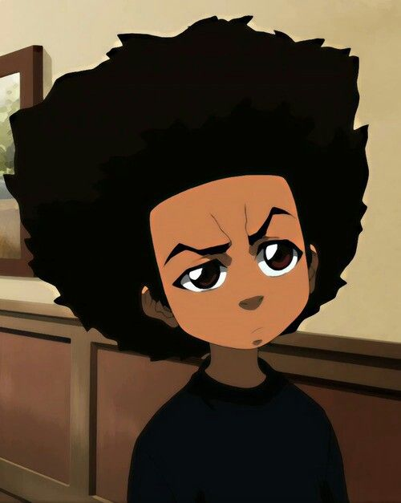

Kemar's SCC IT162 Portal
Welcome
Hello!
My name is Kemar Meeks, and welcome to my portal page. Let me tell a you a little bit about myself.
I am an aspiring web developer, an ametuer home cook, a concert lover, and a bedroom music producer. Currently I am in my fourth quarter here at Seattle Central College.
I am in the web development program, and my second concentration is mobile development. I love learning about code and building interest projects, and the sense of accomplishment that comes everytime I figure out how to use a new technology or figure out how to make something work after hours of effort.